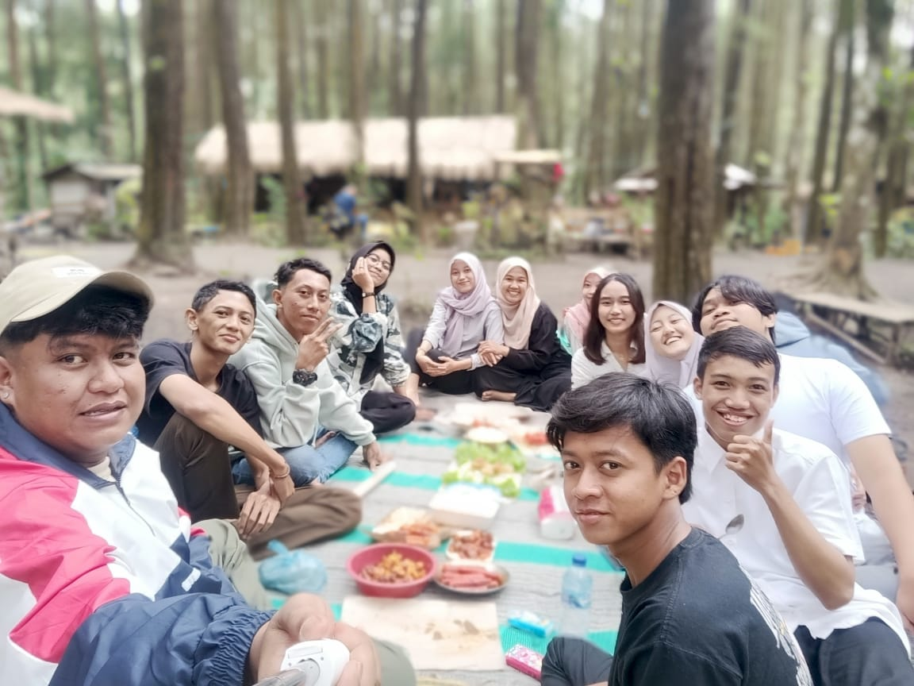

kami dari jurusan Manajemen angkatan 2023, beranggotakan 12 orang. Tujuan dibentuknya grup adalah untuk mempermudah komunikasi dan berbagi informasi seputar perkuliahan. Kegiatan yang sering dilakukan adalah diskusi online, sharing materi, dan kuis mingguan. Keunikan grup ini adalah adanya "asoy core" setiap minggu selalu mengadakan agenda tapi tidak selalu berjalan dengan lancar full wacana
menjadikan grub ini sumber meme dan jokes ter-update😂, meraih predikat grub ter-koplaksejagat raya🤪, menciptakan grub se-receh mungkin tapi tetap produktif
Alamat: jl. kuburan kab. lumajang
Email: buzzer863@gmail.com
Telp : 081.000.000.000